[GNPX v5.1]
Fireworks
Firework is a state of digit arrangement that occurs on the board, and this alone does not confirm or deny Sudoku numbers.
However, by combining multiple fireworks or combining with other digit arrangements, it becomes a Sudoku solving algorithm.
This is the state on the Sudoku board, similar to ALS, Link, etc.
The explanation of the Firework algorithm here is based on the following website.
The New Sudoku Players' Forum
http://forum.enjoysudoku.com/fireworks-t39513.html
Firework definition
Firework is defined as follows:
- Focus on the arrangement of the digit “n” on the board.
- Choose cell A that has the digit “n” as a candidate.
- Let the block of cell A be block-A.
- Set the row House outside block-A and the same as cell A as row-B.
Select cell B for row-B. B is the only cell in row-B that has the digit “n” as a candidate. - Set the column House outside block-A and the same as cell A as column-C.
Select cell C for column-C. Let C be the only cell in column-C that has the digit “n” as a candidate. - Firework-s is a state in which the constituent cells of Firework are connected by strong links.
命題 : Firework(セルA,B,C)は、少なくとも1個の数字"n"を含む
- The proposition is true if cell B or cell C is the digit "n". Cells B and C may both contain the digit "n".
- If both cells B and C are not the digit "n", cell A will be the digit "n", and the proposition is correct.
- If cells A, B, and C are all not the digit "n", the problem will fail as a Sudoku problem.
- In the first diagram, one of a1, a2, a3, and a4 may be the digit "n". More than one cell cannot contain the digit "n".
In this case as well, cell B or cell C is the digit "n" and the proposition is correct. - In Firework-s, the states of cells B and C are the same.
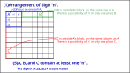
In the following, Firework will be expressed as follows.
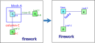
Some firework algorithms use overlapping fireworks.
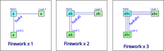
Firework also has special types:
- Strong type: A type in which the stem and leaf are connected by a strong link. The two Leafs match the candidate numbers and attributes.
- A type with only one leaf.
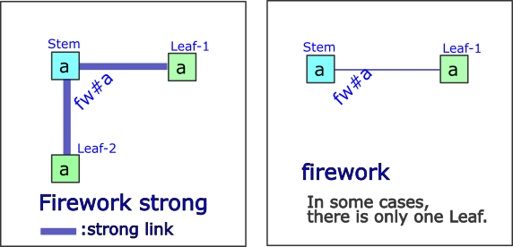
Fireworks analysis algorithms
(1) Firework Triple
A "Firework triple" occurs when three fireworks overlap
(meaning the stem and Leaf-1 and Leaf-2 cells are identical for all three fireworks).
In this configuration, the cells forming the stem, Leaf-1, and Leaf-2 are
"locked" to a specific set of three digits; any candidates other than these three digits can be eliminated.
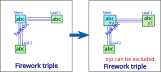
A "Firework triple" can exist even within an incomplete Firework pattern—specifically,
in cases where the "leaf" portion consists of two numbers.
Firework triples are frequently found within such incomplete patterns.
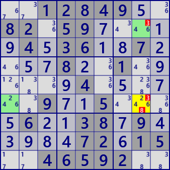
Firework_TripleFirework: r6c8 <#246> / r2c8 r6c1
..128495.82.597..1945361872.5782.1.9...94.5.7..9715...562138794398472615..46592..
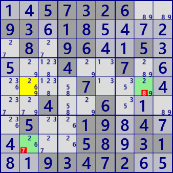
Firework_TripleFirework: r5c2 <#269> / r5c8 r8c2
712.568.4 ..6...2.1 .8.1.2.6. 659.214.. 8..5.91.6 ..1.6.5.. .3.68791. ..8.1.6.. 16..9...8
1457326..936185472.8.9641535..4..7.6....7...4..4..6.1..5..198474...58931819347265
(2) Firework Quadruple
A state in which two "fireworks" overlap (with identical stems and leaves) is denoted as "Firework x2."
A "Firework quadruple" refers to a configuration where the "Leaf-1" and "Leaf-2" components of two separate "fireworks" overlap
(while their stems occupy different positions).
In this configuration, four specific digits are "locked" into four cells.
Consequently, any other candidates within those four cells can be eliminated.
A "Firework quadruple" can also occur using "incomplete" fireworks.
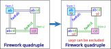
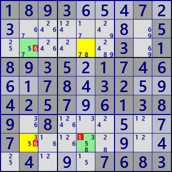
Firework_QuadrupleFirework1 : r8c2 <#35> / r3c2 r8c5
Firework2 : r3c5 <#78> / r3c2 r8c5
189365472 3.....8.5 ......3.1 893521746 617843259 425796138 9.8...5.7 7.....9.4 .4.9.7683
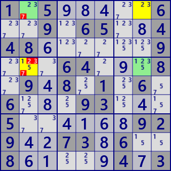
Firework_QuadrupleFirework1 : r4c2 <#15> / r1c2 r4c8
Firework2 : r1c8 <#23> / r1c2 r4c8
1.5984..6 ..9.65.84 486.....9 ...64.9.8 .948.1.6. 6.8.93.4. 5..416892 9427386.. 861..9473
(3) Firework WWing
Suppose two "Firework" structures and two bivalue cells (forming an ALS) are arranged as shown in the following diagram.
This configuration is "locked," and the digit located at the intersection (labeled "a" in the diagram) can be eliminated.
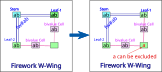
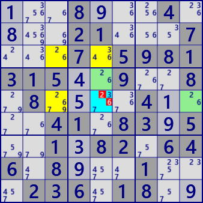
Firework_WWingFirework : r3c3 <#26> / r3c5 r5c3
Assist : r4c5#26 r5c9#26
Exclude : r5c5#26
1..89..4.8..21...7...7.59813154.9..8.8.5..41...41.8395..1382.646.89..1...236.18.9
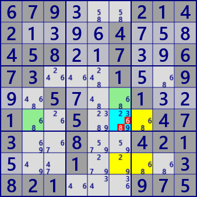
Firework_WWingFirework : r8c7 <#68> / r6c7 r8c6
Assist : r6c2#68 r5c6#68
Exclude : r6c6#68
6793..214 213964758 458217396 73...15.9 9.57..132 1..5...47 3..8..421 5..1....3 821...975
(4) Firework LWing
Suppose two "Firework" cells and one "strong Firework" cell share a "Leaf" cell.
In this configuration, the value associated with the "strong Firework" (represented by "x" in the figure below)
can be excluded from both the "Firework" cells and the "Leaf" cell.
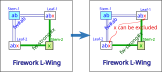
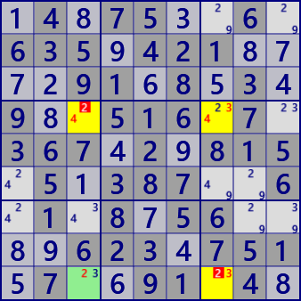
Firework_WWingFirework : r4c7 <#34> / r4c3 r9c7
Assist : r9c3 <#2> / r4c3 r9c7v
Exclude : r4c3#2 r9c7#2v
148753.6. 635942187 729168534 98.516.7. 367429815 .51387..6 .1.8756.. 896234751 57.691.48
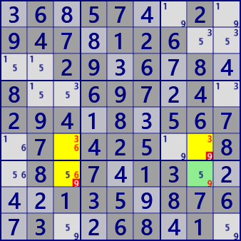
Firework_WWingFirework : r6c3 <#36> / r6c8 r7c3
Assist : r7c8 <#9> / r6c8 r7c3
Exclude : r6c8#9 r7c3#9
148753.6. 635942187 729168534 98.516.7. 367429815 .51387..6 .1.8756.. 896234751 57.691.48
(5) Firework ALP
Suppose a "Fireworkx2" and a bivalue cell are arranged as shown in Fig. 1.
Based on the definition of a "Firework,"
there are two possible patterns for the placement of the digits "a" and "b" within the bivalue cell and the stem (Fig. 2).
Consequently, the digits "a" and "b" form a "locked" set across the stem and the bivalue cell.
Therefore, any digits other than "a" and "b" can be eliminated from the stem (Fig. 3).
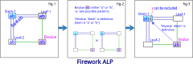
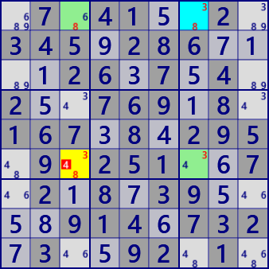
Firework_ALPsForework : r4c3 <#35> / r4c7 r9c3
rcIntersect : Intersect_Cell:r9c7v
.37986.14 914752683 ..841379. 8..179.4. 192364857 47.5281.9 .218479.. 789635421 .4.291.78
(6) Firework Double_ALP
A "Double_ALP" is a configuration in which two ALPs are linked symmetrically, centered on a bivalue cell.
In each ALP, the logic of the ALP allows for the elimination of any digits other than "a" and "b" from the "stem."
Within an ALP, once the digits for the bivalue cell are determined,
the placement of the digits "a" and "b" throughout the ALP is fixed (fig-2).
Furthermore, the digits "a" and "b" are restricted in areas outside of the "firework" structure (fig-2, 3).
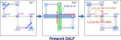
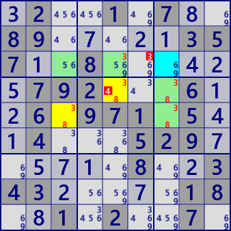
Firework_DALPForework1:
Stem;r4c5 sw:False FreeB:38
(rc1,rc2):r3c5 r4c7
Forework2:
Stem;r4c5 sw:False FreeB:38
(rc1,rc2):r3c5 r4c7
rcIntersect:r3c7
32..1.78. 89.7.2135 71.8...42 5792...61 26.971.54 14...5297 .571.8.23 432..7.18 .81.2..7.